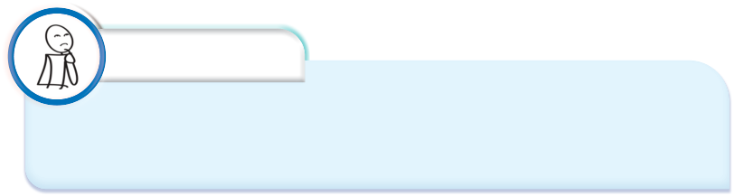

Chapter
Banana production
Two
Introduction
In this chapter, you will learn some basic information about banana and its
economic importance in daily life. Furthermore, you will learn principles
and practices underlying banana production to maximise productivity. The
competencies developed will enable you to find beneficial opportunities in
the value chain of banana production and apply principles and practices in
producing bananas, from planning to post-harvest handling, processing, storage,
marketing as well as crop record keeping.
Think
“The giant herb with a false stem that produces fruits which can be eaten raw
or cooked.”
Banana and its importance
The banana plant is a large perennial herb with leaf sheaths that form a trunk-like
pseudostems. Its scientific name is Musa spp. found in the family Musaceae. It
is grown for its fruit, which can be eaten either as a ripe dessert or cooked. The
banana fruit is mainly rich in carbohydrates, fibres, potassium, vitamins A, B6,
and C. Additionally, bananas can be processed into flour, canned slices, jam, jelly,
and alcohol. Their widespread popularity makes them an important cash crop.
After harvesting the banana bunches, its foliage and pseudostems can be used as
animal feed. Bananas are grown on small-scale and large-scale commercial farms
(Figure 2.1). The banana industry provides employment for thousands of people
worldwide. In Tanzania, the main local banana cultivars are the East African